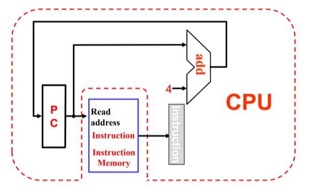

The Processor¶
Introduction¶
Instruction Execution Overview¶
CPU performance factors
- Instruction count
Determined by ISA and compiler
如同样的功能用 Intel 和 RISC-V 的处理器实现，英特尔的指令用的更少（因为更复杂） - CPI and Cycle time
Determined by CPU hardware
For every instruction, the first two steps are identical
- Fetch the instruction from the memory
- Decode and read the registers
Next steps depend on the instruction class
- Memory-reference
load, store - Arithmetic-logical
- branches
CPU Overview¶
- Use ALU to calculate
- Arithmetic result
- Memory address for load/store
- Branch comparison
因为我们是单周期，因此 ALU 只能做比较，具体跳转的地址由单独的 Adder 计算。
- Access data memory for load/store
- PC \(\leftarrow\) target address or PC + 4
Question
为什么指令要和内存分开？
因为我们是单周期，我们无法在同一个周期内既读指令又读数据。
Can’t just join wires together -- Use multiplexers.
Control¶
Logical Design Convention¶
- Information encoded in binary
- Low voltage = 0, High voltage = 1
- One wire per bit
- Multi-bit data encoded on multi-wire buses
- Combinational element
- Operate on data
- Output is a function of input
- State (sequential) elements
Store information
逻辑电路内容简要复习
Building a datapath¶
Elements that process data and addresses in the CPU.
同类指令的 opcode 是一样的（I 型指令的里逻辑运算、load 指令、jal 不同），具体功能由 Func 决定。（因此不把所有操作编到 opcode 内）
Instruction execution in RISC-V¶
- Fetch:
- Take instructions from the instruction memory
- Modify PC to point the next instruction
- Instruction decoding & Read Operand:
- Will be translated into machine control command
- Reading Register Operands, whether or not to use
- Executive Control:
- Control the implementation of the corresponding ALU operation
- Memory access:
- Write or Read data from memory
- Only ld/sd
- Write results to register:
- If it is R-type instructions, ALU results are written to rd
- If it is I-type instructions, memory data are written to rd
- Modify PC for branch instructions
Instruction fetching¶

- R-format Instructions
- Read 2 register operands
- Perform arithmetic/logical operation
- Write register result
- Load/Store Instructions
- Read register operands
- Calculate address using 12-bit offset
Use ALU, but sign-extend offset - Load: Read memory and update register
- Store: Write register value to memory
- Branch Instructions
- Read 2 register operands
- Compare operands
use ALU, substract and check Zero output - Calculate target address
- Sign-extend displacement
- Shift left 1 place (halfword displacement)
- Add to PC value
First-cut data path does an instruction in one clock cycle
- Each datapath element can only do one function at a time
- Hence, we need separate instruction and data memories
Path Built using Multiplexer¶
-
R-type instruction Datapath

-
I-type instruction Datapath
- For ALU
- For load

-
S-type (store) instruction Datapath

- SB-type (branch) instruction Datapath

- UJ-type instruction Datapath

Full datapath

A simple Implementation Scheme¶
Analyse for cause and effect
- Information comes from the 32 bits of the instruction
- Selecting the operations to perform (ALU, read/write, etc.)
- Controlling the flow of data (multiplexor inputs)
- ALU's operation based on instruction type and function code

- 7 个控制信号和一个 4 位的
ALU_operation. - MemToReg 有三个源，分别是
load指令，PC 来的(jal, jalr存 PC+4), ALU 出来的（R 型，I 型）

ALU symbol & Control¶
ALU used for
- Load/Store: F = add
- Branch: F = subtract
- R-type: F depends on opcode
因此我们进行两级解码 2-level decode.

First level¶
- 一级解码后，可以决定除了
ALU_opration以外的控制信号 - 同时我们会解码出 2 位的
ALU_op.


second level¶
ALU operation is decided by 2-bit ALUOp derived from opcode, and funct7 & funct3 fields of the instruction.

Datapath with Control¶

蓝线为控制通路，会决定数据的流向。
An overview of pipelining¶
Performance¶
对于单周期 CPU, CPI 是 1, 但时钟周期会很长。
假设取指令 200ps, 寄存器读 100ps, ALU 计算 200ps, 内存访问 200ps, 寄存器写 100ps.
那么 add 需要 600ps, ld 需要 800ps, sd 需要 700ps, beq 需要 500ps.
Longest delay determines clock period. (ld)
We will improve performance by pipelining.
Pipelining¶

我们可以把每条指令都划分为这么几步：
- IF: Instruction fetch from memory
- ID: Instruction decode & register read
- EX: Execute operation or calculate address
- MEM: Access memory operand
- WB: Write result back to register

\(CPI \approx 1\)
- One instruction will be issued (or finished) each cycle.
- During any cycle, one instruction is present in each stage.
Pipeline Performance¶

不同操作的时间也不同，流水线 CPU 的时钟周期为最长的操作时间。
流水线可以提高吞吐量(throughput) 但并没有改变每条指令的执行时间(Latency)。
RISC-V ISA designed for pipelining¶
RISC-V 适合流水线设计。
- All instructions are 32-bits
Easier to fetch and decode in one cycle - Few and regular instruction formats
Can decode and read registers in one step - Load/store addressing
Can calculate address in 3rd stage, access memory in 4th stage
Hazards¶
冒险/竞争
当前这条指令不能进入下一个阶段，要等待。
- Structure hazards
A required resource is busy. - Data hazard
Need to wait for previous instruction to complete its data read/write. - Control hazard
Deciding on control action depends on previous instruction.
Structure Hazards¶
如果只有一块内存，但 IF 和 MEM 阶段都需要使用这块内存，那么 IF 就会被 stall 暂停，造成一个 bubble. (即流水线内有一个时刻是清空的，因为没有我们没有去取指令)
\(\Downarrow\)
Pipelined datapaths require separate instruction/data memories. (Or separate instruction/data caches)
Data Hazards¶
An instruction depends on completion of data access by a previous instruction.
Example

注意这里 WB 是在前半个周期将数据写入寄存器, ID 是在后半个周期将数据从寄存器中取出。
但实际上我们要用的结果在 EX 时已经产生了。
-
Forwarding(Bypassing)
Use result when it is computed- Don’t wait for it to be stored in a register
- Requires extra connections in the datapath
Example

Load-Use Data Hazard
Example

可以把后续与这些寄存器无关的指令先拿到这里执行。（Code Scheduling）
Example

修改后, ld x2, 8(x0) 已经从内存中读出数据还没有写回寄存器，可以直接送到 add x3, x1, x2 中去。
Control Hazards¶
Branch determines flow of control
- Fetching next instruction depends on branch outcome
- Pipeline can’t always fetch correct instruction
可以预测，或者将比较放在 ID 级。
Example

Branch Prediction
更长的流水线不能很早地决定分支结果。
可以预测 branch 命中或者不命中。
- Static branch prediction
假设总是命中/不命中 - Dynamic branch prediction
记录上次跑到这里是否命中，然后下次按照之前的结果预测。
Summary
- Pipelining improves performance by increasing instruction throughput
- Executes multiple instructions in parallel
- Each instruction has the same latency
- Subject to hazards(Structure, data, control)
- Instruction set design affects complexity of pipeline implementation
RISC-V Pipelined Datapath¶
不同阶段之间，我们需要寄存器来保存之前阶段得到的值。
竞争只会发生在从右往左的阶段。

注意到，第五个阶段写回时，写寄存器号应该是从 MEM/WB 中的，而不是 IF 出的寄存器号。
- Single-clock-cycle pipeline diagram: Shows pipeline usage in a single cycle; Highlight resources used
- multi-clock-cycle diagram: Graph of operation over time
Pipelined Control¶
控制信号 ID 阶段全部译出，随后通过寄存器传到后续阶段中去。
有些信号在 WB 阶段用，有些在 M 阶段用，有些在 EX. 使用之后就不再需要把信号传递下去。

Data Hazards¶
Forwarding¶
Example

and 语句中将 EX 的结果前递, or 语句中要将 DM 的结果前递（此时 EX 的值已经不是第一条指令的结果了）
如何判断是否需要前递？
Rd 要一直传下来，我们可以借此判断要读出的寄存器是否是之前指令要写回的寄存器。
Data hazards when
EX/MEM.RegisterRd = ID/EX.RegisterRs1
在第四个时钟周期时把 EX/MEM 的寄存器值送到 ALU.EX/MEM.RegisterRd = ID/EX.RegisterRs2MEM/WB.RegisterRd = ID/EX.RegisterRs1MEM/WB.RegisterRd = ID/EX.RegisterRs2
只有在我们要改变寄存器的值的时候才能用前递的值（有些指令可能根本就不会写回寄存器，没有有效的 Rd）
EX/MEM.RegWrite, MEM/WB.RegWrite 不为 0.
此外 EX/MEM.RegisterRd, MEM/WB.RegisterRd 也不能为 0.

| Mux control | Source | Explanation |
|---|---|---|
ForwardA = 00 |
ID/EX | The first ALU operand comes from the register file. |
ForwardA = 10 |
EX/MEM | The first ALU operand is forwarded from the prior ALU result. |
ForwardA = 01 |
MEM/WB | The first ALU operand is forwarded from data memory or an earlier ALU result. |
Double Data Hazard

我们前递时要加一个条件，只有在 EX/MEM 的条件不成立时，才能查看 MEM/WB 的条件。
Load-Use Hazard Detection¶
如果我们在 ld 指令 EX/MEM 时暂停，此时 ld 后面有两条指令需要暂停，其实我们可以更早的发现这个问题。
Load-use hazard when
ID/EX.MemRead and ((ID/EX.RegisterRd = IF/ID.RegisterRs1) or (ID/EX.RegisterRd = IF/ID.RegisterRs2))
If detected, stall and insert bubble
Stall¶
在 ld 后面 stall，使得这级的控制信号为 0, 同时阻止 PC, IF/ID 寄存器的更新。
相当于又进行了一次 decode.
Example


- Stalls reduce performance
- But are required to get correct results
- Compiler can arrange code to avoid hazards and stalls
Branch Hazards¶
是否跳转在 MEM 阶段决定。
最朴素的方法是无视这种情况，因为前三个阶段并不涉及对寄存器和内存修改，即使我们预测后续不执行这些指令也不会带来影响。但这样可能带来 CPI 的显著降低。
一种方法是在 ID 级决定是否跳转（此时已经有了两个源操作数和立即数）
Example

这样我们只可能多余一条指令，插入 bubble 即可。但是这样也不可接受。
Dynamic Branch Prediction¶
In deeper and superscalar(多发射) pipelines, branch penalty is more significant.
Use dynamic prediction.
- Branch prediction buffer (aka branch history table)
记录前几次是否命中 - Indexed by recent branch instruction addresses
- Stores outcome (taken/not taken)
- To execute a branch
- Check table, expect the same outcome
- Start fetching from fall-through or target
- If wrong, flush pipeline and flip prediction
可以处理 for 循环的预测。
1-Bit Predictor
但也存在问题，对于双层循环，当内层循环要结束时会错两次。

- Mispredict as taken on last iteration of inner loop
- Then mispredict as not taken on first iteration of inner loop next time around
可以修改预测方式：只有连续错误两次才会修改我们的预测。即 2-Bit Predictor.

Calculating the Branch Target¶
即使 branch 命中了，我们也有一个时钟的 bubble 来计算地址。
但 branch 要跳转的地址其实是可以存下来的。
Branch target buffer
- Cache of target addresses
- Indexed by PC when instruction fetched
If hit and instruction is branch predicted taken, can fetch target immediately
Exceptions and Interrupts¶
“Unexpected” events requiring change in flow of control.
- Exception 异常
Arises within the CPU
e.g. undefined opcode, syscall, … - Interrupt 中断
From an external I/O controller
Handling Exceptions¶
- Save PC of offending (or interrupted) instruction
In RISC-V: Supervisor Exception Program Counter(SEPC) - Save indication of the problem
In RISC-V: Supervisor Exception Cause Register(SCAUSE)
64 bits, but most bits unused
e.g. Exception code field: 2 for undefined opcode, 12 for hardware malfunction... - Jump to handler
必须由硬件跳到这个地址。- Direct
所有异常跳到固定地址。 - Vectored Interrupts
中断向量
Handler address determined by the cause.
Exception vector address to be added to a vector table base register
- Direct
当多个异常/中断同时来时，如何处理？
Handler Actions¶
中断服务程序
- Read cause, and transfer to relevant handler
- Determine action required
- If restartable
- Take corrective action
- use SEPC to return to program
- Otherwise
- Terminate program
- Report error using SEPC, SCAUSE, ...
Exceptions in a Pipeline¶
Another form of control hazard.
Consider malfunction on add in EX stage. add x1, x2, x1
- Prevent x1 from being clobbered
- Complete previous instructions
- Flush add and subsequent instructions
- Set SEPC and SCAUSE register values
- Transfer control to handler
Instruction-Level Parallelism (ILP)¶
Pipelining: executing multiple instructions in parallel
指令级并行
To increase ILP
- Deeper pipeline
让每一级流水线做更少的事情，这样也可以提高工作频率。
但流水线不能无限细分，因为流水线寄存器也会带来开销。 - Multiple issue
多发射
这样可以做到 CPI < 1. 使用 Instructions Per Cycle (IPC)
Multiple issue¶
- Static multiple issue
编译器把能够同时放到流水线的指令排好
编译器要能检测，避免竞争 - Dynamic multiple issue
CPU 自己决定执行那些指令，编译器会帮忙重排指令，但还是由 CPU 解决竞争。
Static multiple issue¶
RISC-V with Static Dual Issue

ALU/branch 指令不用访问内存。

所以这两条不能同时发出，因为存在竞争关系。

Loop Unrolling
循环展开（但注意指令间要尽量减少相同寄存器的依赖）
Use different registers per replication
- Called “register renaming”
- Avoid loop-carried “anti-dependencies”
Loop Unrolling Example